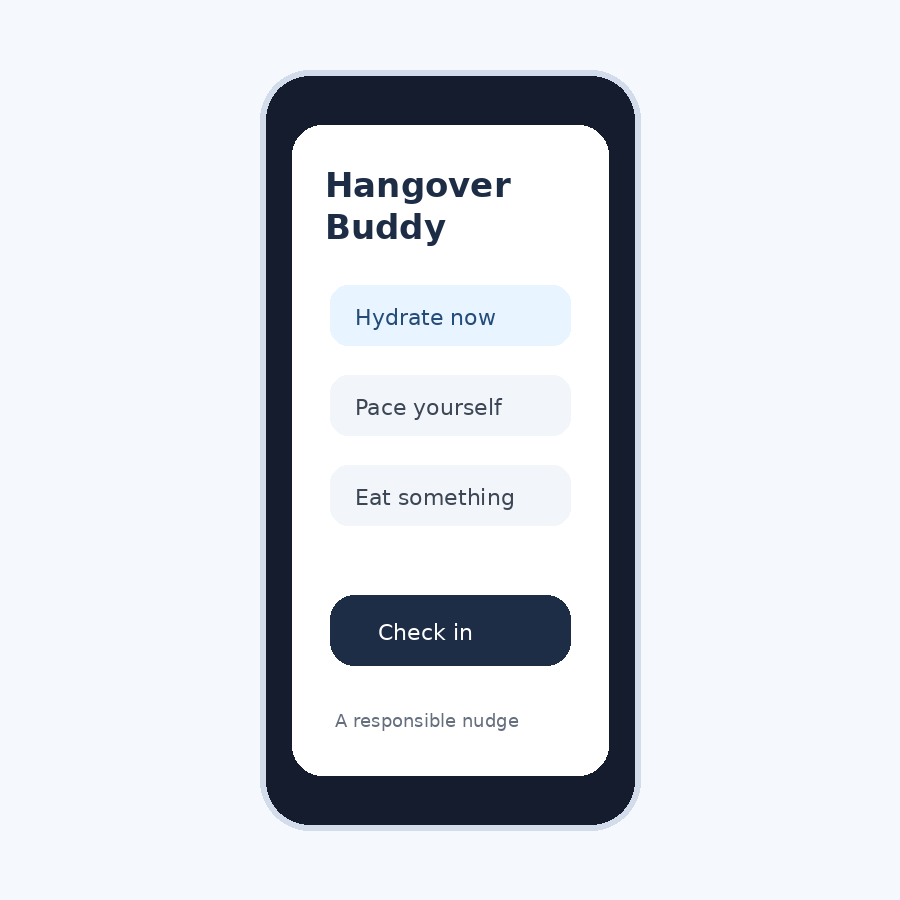

Need-led
We begin with a specific user problem rather than a long list of features.
Purpose-built mobile products
Buddy Apps turns specific, underserved problems into focused mobile products. Each app is designed to be useful at the moment it matters, without unnecessary features or complexity.
What we do
Many useful app ideas begin with a narrow problem: a decision people repeatedly face, information they need at the right time, or a process that should be simpler. We identify those needs and build direct, practical tools around them.
We begin with a specific user problem rather than a long list of features.
Every screen and interaction has a clear job to do.
Our products are designed to be understood quickly and used easily.
Our approach
We keep the product process centered on the problem the app is meant to solve.
Define the situation, the user, and the outcome that would make the product genuinely useful.
Remove distractions and focus the experience on the actions and information that matter.
Release a usable product, listen to users, and refine it based on real-world use.
Our products
Each Buddy Apps product has its own focused purpose, product information, support resources, and download links.

Available now
A practical companion that provides timely reminders intended to help adults make more responsible choices while drinking alcohol.
View Hangover BuddyIn development
Convert recipes from almost any website into guided Thermomix recipes, then send them to Cookidoo with the settings and automation needed to prepare them on your Thermomix.
View ThermovertSimple by design
Our goal is to create focused apps that are clear, responsible, and effective for the need they were built to address.